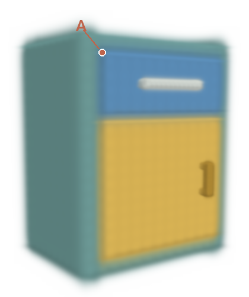
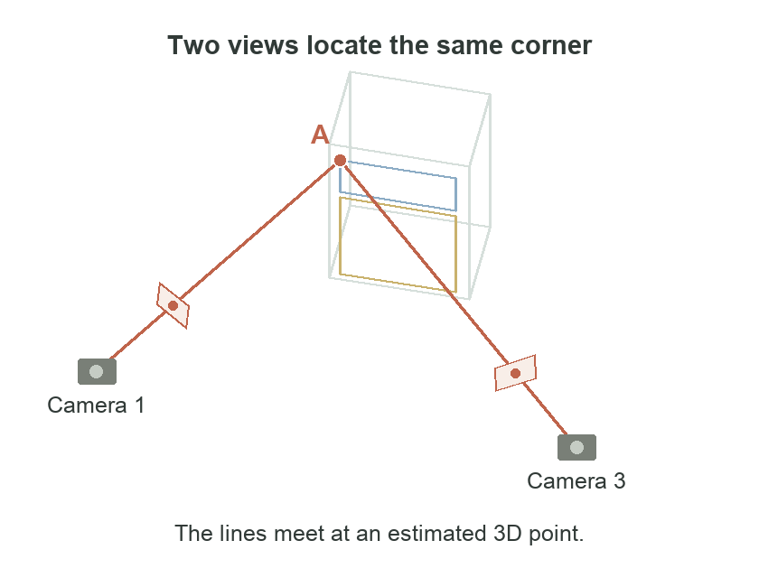
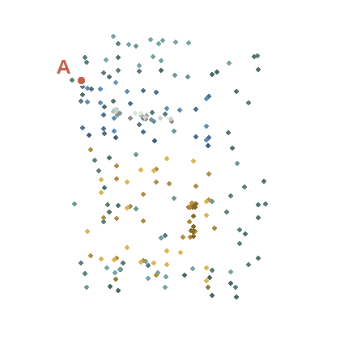

2.4 Recover cameras and geometry from photographs
Tools and models · COLMAP software and the VGGT model
To reconstruct the cabinet, collect overlapping views of it. We need to relate those flat photographs to camera viewpoints and locations in 3D space.
2.4.1 What information do we need?
Keep the cabinet, door, and drawer still while photographing from different positions. The images are the observations we want the reconstruction to explain.
- Camera parameters
- Where was the camera, which way did it point, and what were its lens settings for each image? These determine the line of sight for each pixel.
- Geometry estimates
- Where might the cabinet’s surfaces be in 3D? Depth estimates and 3D points provide information about their locations.

COLMAP and VGGT offer two ways to estimate this information from photographs. COLMAP matches details across views; VGGT uses patterns learned during prior training. When camera positions and settings are already known, we can supply those values directly.
2.4.2 COLMAP: match details across views
COLMAP is software that estimates cameras and 3D points by finding the same details in different photographs. The cabinet drawings below illustrate this process. Follow the marked drawer corner:



A marks the same cabinet corner in all three views. Software matches recognizable details across photos. From many such matches, it estimates where the cameras were and where the details sit in 3D.




This camera-and-point estimation is called Structure from Motion (SfM). COLMAP is one tool for it. A plain, featureless panel can provide few reliable matches; we do not yet have a complete cabinet surface.
The sparse reconstruction provides camera parameters and scattered 3D points. Keep the input photographs too: later stages will compare rendered images with them. This example stops at COLMAP’s sparse stage; COLMAP also has tools for denser reconstruction.
2.4.3 VGGT: predict cameras and geometry
VGGT (Visual Geometry Grounded Transformer) is a model that estimates camera parameters and geometry from images. It is pretrained: it has already learned from many scenes before receiving these cabinet photographs. For a new cabinet, it uses that prior learning to predict where the cameras and surfaces are. VGGT project.
Cabinet images
A pretrained geometry model
Cameras + depth / 3D points
| Output | Meaning for the cabinet |
|---|---|
| Camera parameters | An estimated viewpoint and lens for each photograph. |
| Depth map | A grid aligned with the image, giving an estimated depth for each pixel. It tells us how far into the scene the visible surface lies. |
| Point map | Image locations are associated with predicted positions in 3D. For example, a drawer corner gets a 3D location. |
For example, VGGT can estimate a 3D position for the drawer corner and a camera viewpoint for each image. Its export tool can save those cameras and points in COLMAP’s file format. Here, “COLMAP format” means an arrangement of files that other software can read; the estimates can still come from VGGT.
To obtain a Gaussian scene, continue with a Gaussian training method. The official VGGT integration passes the images, estimated cameras, and points to gsplat, a Gaussian rendering and training library. Training then adjusts the Gaussians to match the cabinet photographs.
2.4.4 Where do these outputs go next?
Choose a reconstruction method after preparing the inputs. 3DGS and NeRF are two alternatives. Both keep the cabinet photographs as target images: render from the estimated cameras, compare with the photos, and improve the 3D representation.
Continue with 3DGS
- Use estimated 3D points as starting locations for Gaussians.
- Use each camera to render the current Gaussians from its photograph’s viewpoint.
- Compare with that photograph and adjust the Gaussians.
Saved result: the fitted Gaussian parameters.
Follow the cabinet in Section 2.5Continue with NeRF
- Use each camera to construct rays through image pixels.
- Sample positions along those rays and query a network for color and density.
- Render pixels, compare with the photographs, and adjust the network.
Saved result: a trained network that describes the cabinet.
Follow the cabinet in Section 2.6The 3D points play different roles. In the 3DGS route, estimated surface points provide starting locations for blobs. In the original NeRF route, the renderer chooses query locations along camera rays, including in empty space. Those locations need not coincide with COLMAP’s or VGGT’s estimated surface points. Each query position and viewing direction is sent to the NeRF network.
The worked examples below use COLMAP-style camera preparation. The VGGT export offers another way to supply camera and point estimates; the later rendering and fitting stages still need to be carried out.
Further details: original 3DGS inputs and original NeRF camera preparation.